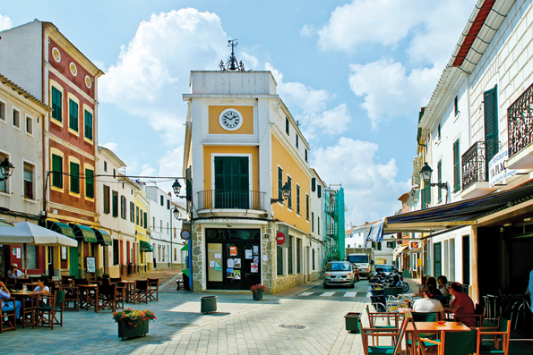

Es Mercadal, en pleno centro de Menorca
El municipio de Es Mercadal, cuyo centro neurálgico es el pueblo del mismo nombre, tiene una extensión de 134 Kilómetros cuadrados y limita al este con Alaior, al sur con Es Migjorn Gran y al oeste con Ferreries. La mayoría de sus habitantes se concentran en Es Mercadal y Fornells, en la costa norte. También existen varios núcleos residenciales, centros de actividad turística del municipio.
El actual municipio es una parte de la antigua Pobla des Mercadal i Castell de Santa Àgueda, que antiguamente también estaba compuesto con las poblaciones de Ferreries y Es Migjorn Gran, actualmente independientes.
Es Mercadal es uno de los pueblos más antiguos de Menorca. En 1301, el rey Jaume II de Mallorca autorizó la celebración de mercado los jueves, en un lugar que se denominaba la Pobla del Mercadal. Seguramente, este mercado fue el que dio nombre a la villa, ya que Mercatallus en latín significa “lugar donde se realizan actividades mercantiles”.
Es Mercadal presenta un entramado urbano articulado en torno al núcleo histórico, que crece al paso del torrente por el Pla de ses eres. En la zona más elevada, se encuentra la iglesia de Sant Martí, y en torno a estas calles se expande toda una trama de casas blancas y tejados rojos.
La iglesia de Sant Martí corona la geografía urbana del pueblo. Es un templo iniciado a mediados del siglo XVIII y construido sobre un santuario más antiguo (s. XV - XVI). Su construcción finalizó a principios del siglo XIX. De aspecto macizo, está coronada por un campanario de planta cuadrada.
A pocos metros, se encuentra el edificio del ayuntamiento, conocido popularmente como "La Sala", del que destaca la puerta de acceso, el balcón de la planta superior y el antiguo campanario.
Del patrimonio arquitectónico local cabe mencionar el Aljub, edificación de la época de las dominaciones británicas. Es un gran depósito construido en 1735, siendo gobernador Richard Kane, con capacidad para más de 300 toneladas.
 Otros elementos de gran valor etnológico del pueblo son la modesta herrería de Pepe Carretero, ahora museizada, o el pequeño molino harinero d’en Biel, más modesto que la imponente harinera de s'Aranjí, un conjunto de edificios e instalaciones que conforman la infraestructura de una antigua fábrica harinera, considerada uno de los pocos conjuntos de arqueología industrial en Menorca.
Otros elementos de gran valor etnológico del pueblo son la modesta herrería de Pepe Carretero, ahora museizada, o el pequeño molino harinero d’en Biel, más modesto que la imponente harinera de s'Aranjí, un conjunto de edificios e instalaciones que conforman la infraestructura de una antigua fábrica harinera, considerada uno de los pocos conjuntos de arqueología industrial en Menorca.
Alrededor del pueblo, tres molinos de viento salpican el entorno rural del municipio: el de Tramuntana, el des Racó y el d'enfora, en el camino den Kane en dirección a Ferreries.
En las afueras del pueblo encontramos el acceso a Monte Toro, la montaña más importante de Menorca. Se levanta 357 metros sobre el nivel del mar y ofrece una vista espectacular de la isla. Es también el centro espiritual de los menorquines. Allí se erige el santuario de la Mare de Déu del Toro, imagen no exenta de leyendas que se remonta al siglo XIII.
Cerca del pueblo de Es Mercadal existe una gran diversidad de parajes naturales. Destacan las Basses de Lluriac, zona de gran riqueza natural por su biodiversidad, en una zona de marisma litoral formada por varias charcas temporales y el último tramo del torrente.
El litoral del municipio es uno de los más bellos de la costa menorquina. Ampliamente protegido, presenta la mayor extensión de costa virgen de la isla.
El punto más septentrional de la costa menorquina es el cabo de Cavalleria. Allí está el faro más antiguo de la isla, de mediados del siglo XIX. En su entorno más inmediato se encuentra el puerto de Sa Nitja y el poblado romano del mismo nombre, muestra del gran valor de la zona a nivel humano y ambiental. Esta zona es una síntesis de la riqueza ecológica del litoral menorquín, en un entorno excepcional.
 La costa mercadalense también presenta parajes idílicos cómo son las playas de Cavalleria, Binimel•là o Pregonda, vírgenes y de aguas turquesa. También hay playas en otros núcleos turísticos como Tirant, Son Saura o Arenal den Castell, de fácil acceso y con servicios.
La costa mercadalense también presenta parajes idílicos cómo son las playas de Cavalleria, Binimel•là o Pregonda, vírgenes y de aguas turquesa. También hay playas en otros núcleos turísticos como Tirant, Son Saura o Arenal den Castell, de fácil acceso y con servicios.
El Camí de Cavalls discurre bordeando toda la costa mercadalense y permite transitar por parajes espectaculares e irrepetibles. Junto con el Camí den Kane (primera vía que atravesó la isla s. XVIII) es una de las vías históricas más importantes del municipio.
Las fiestas mayores de Es Mercadal son las fiestas de Sant Martí, de cariz cívico-religioso, que se celebran el tercer fin de semana de julio, con los caballos como principales protagonistas.
Es Mercadal destaca por su gran oferta gastronómica. A los populares amargos y carquinyols hay que sumar una extensa oferta de la gastronomía tradicional, además de interesantes muestras de la artesanía popular.
Es Mercadal se ha especializado en el sector servicios, y a su oferta comercial suma una gran actividad en torno al Recinto Ferial, donde está el Centro Artesanal de Menorca o el museo de la radio y donde se celebran ferias de gran importancia como la Feria del caballo de raza menorquina o la Feria de la perdiz.
En los últimos años se han popularizado los mercados artesanos estacionales y agroalimentarios, destacando el que se celebra los jueves por la tarde de junio a septiembre y que concentra miles de personas por las calles de Mercadal.
Además, por extensión y diversidad, también se pueden practicar infinidad de deportes que van desde el golf, en Son Parc, a la hípica o actividades náuticas, centralizadas a la Estación Náutica de Fornells.